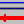

2.4.2. TAB “Gleichungen”¶
Man beginnt mit dem zunächst bedienbaren ASCII-Textfenster ganz oben, in das zeilenweise die Gleichungen eingetragen werden können:Text field for equations.
Wenn alle Gleichungen eingegeben wurden, wird der Button „Laden Symbole(1) aus Gleichungen“ angeklickt. Dies extrahiert die Formelsymbole aus den Gleichungen, führt intern einen Syntaxcheck durch und lädt die Symbole in eine Tabelle, in der der Benutzer Einheiten und Bedeutungen ergänzen kann.
Nach dem Bearbeiten der Gleichungen kann es hinsichtlich der (vorher schon vorhandenen) Liste von Symbolen zu folgenden Fällen kommen:
Es sind neue Symbole hinzugekommen. Die entsprechenden Zeilen in der Symbole-Tabelle werden grün hinterlegt.
Bisher vorhandene Symbole werden nicht mehr benötigt (überflüssige Symbole). Die entsprechenden Zeilen in der Symbole-Tabelle werden an das Ende der Tabelle verlegt und dort gelb hinterlegt.
Die gelb hinterlegten Zeilen müssen zunächst mit der Maus markiert werden; danach werden diese Zeilen mit dem Toolbar-Icon „Zeilen löschen“  entfernt. Bestimmte Symbole, die nicht direkt in den Gleichungen vorkommen, aber noch benötigt werden (z.B. Messdauern), dürfen nicht gelöscht werden.
Zur weiteren Bearbeitung: siehe Editing the symbol list.
In der Symbolliste können solche Eingangsgrößen, für die Mittelwert und Standardabweichung aus einem noch einzugebenden Datensatz berechnet werden sollen, in der Spalte „Typ“ mit „m“ anstelle von „a“ (abhängige Größe) oder „u“ (unabhängige Größe) gekennzeichnet. Des Weiteren wird eine mit einer Gleichung zu berechnende Größe, die nur als Parameter ohne Unsicherheit verwendet werden soll, mit einem „p“ gekennzeichnet.
Wenn die Symbolliste vervollständigt worden ist (in der Testphase auch ohne Einheiten und Bedeutungen), wird mit der Maus der Button „Laden Symbole(2) aus der ergänzten Symbol-Tabelle“ betätigt und die ab jetzt für die nachfolgenden Berechnungen gültige komplette Symbolliste geladen.
Inzwischen sind die beiden Auswahl-Felder „Netto-Zählrate“ und „Brutto-Zählrate“ bedienbar geworden. Hier sind aus der Symbolliste jeweils die Symbole für die Netto-Zählrate und die Brutto-Zählrate auszuwählen. Im weiteren Ablauf des Programms ist diese Zuordnung ausschließlich von Bedeutung für die Berechnung der Erkennungs- und Nachweisgrenzen. Hat man diese Auswahl getroffen, wird diese mit Klicken des Buttons „Netto- und Brutto-Zählrate übernehmen“ bestätigt und übernommen.
Wenn es in dem Projekt mehr als eine Ergebnisgröße gibt, müssen genau die zur aktuell gewählten Ergebnisgröße gehörenden Symbole für Netto- und Brutto-Zählrate ausgewählt werden.
Bemerkung
Die Identifikation der Netto-Zählrate (genauer: der verfahrensbezogenen Netto-Zählrate, siehe see Numerical procedures) wird benötigt, um bei der Nachweisgrenzen-Iteration die Umkehrung der Gleichungen, vom variierten Ergebniswert (z.B. in Bq/kg Feuchtmasse) zurück zur Netto-Zählrate (in \(s^{-1}\)), rechnerisch vollziehen zu können. Die Brutto-Zählrate muss identifiziert werden, da der Benutzer für diese die Unsicherheits-Funktion definieren muss; für die Ermittlung von Erkennungs- und Nachweisgrenze wird intern der Wert der Brutto-Zählrate variiert, wobei diese Unsicherheits-Funktion dazu dient, für jeden Iterationsschritt den geänderten Wert der Unsicherheit bestimmen zu können.
Ausnahmen:
bei der Analyse einer Abklingkurve mit Hilfe des linearen Least squares-Verfahrens (Aufruf von Linfit) entfällt die Angabe der Brutto-Zählrate;
bei der Mittelung von Aktivitäten mehrerer Gammalinien eines Radionuklids (Aufruf von Gamspk1) entfällt die Angabe der Brutto-Zählrate; die Netto-Zählrate ist in diesem Falle Platzhalter für die Aktivität (Bq) des Messpräparats, dessen Symbol ausgewählt werden muss.
bei der Summation oder Mittelung mehrerer Aliquot-Messungen (Aufruf von SumEval)
Bei diesen Ausnahmen ist also für das Symbol der Netto-Zählrate (bzw. Probenaktivität bei Gamspk1) dasjenige auszuwählen, das in den Gleichungen durch den Aufruf von Linfit bzw. Gamspk1 definiert wird.
Nach Schritt 4 ist das TAB “Gleichungen” zunächst erfolgreich abgearbeitet. Das nächste TAB “Values, Uncertainties” wird bedienbar und man wählt dieses per Mausklick aus.